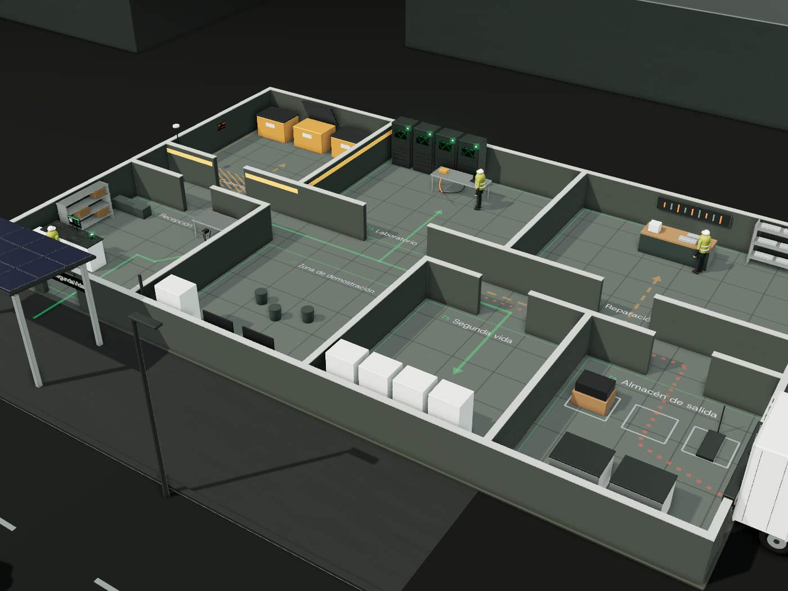

La estación por dentro
Una nave pequeña, del tamaño de un taller mecánico, en un polígono o junto a un punto limpio. Con acceso fácil en coche y furgoneta.

Siete zonas, un recorrido
La batería entra por recepción y avanza siempre hacia la salida. Pasa el ratón por una zona de la lista para verla en el plano.
-
1
Recepción
Se escanea el pasaporte de la batería, se registran los datos del cliente y se hace una revisión visual rápida.
-
2
Zona de cuarentena
Las baterías golpeadas, hinchadas o calientes se aíslan en contenedores ignífugos antes de tocarlas.
-
3
Laboratorio de diagnóstico
Se mide el estado de salud con equipos de carga y descarga.
-
4
Taller de reparación
Se cambian los módulos y las celdas dañadas.
-
5
Taller de segunda vida
Las baterías reutilizables se montan en armarios de almacenamiento de energía.
-
6
Almacén de salida
Baterías listas para entregar y contenedores homologados para enviar a reciclaje.
-
7
Zona de demostración
Un armario de segunda vida conectado a placas solares alimenta la propia estación. Sirve para enseñar la idea a visitantes y colegios.
Seguridad, lo primero
Una batería de litio dañada puede arder y es difícil de apagar. Por eso la seguridad es el primer apartado del diseño de la estación.
-
Formación en alta tensión
Formación específica para todo el personal técnico.
-
Detección de temperatura y humo
Sensores que avisan antes de que un problema crezca.
-
Extinción para litio
Sistemas de extinción adecuados para baterías de litio.
-
Almacenamiento separado
Distancias mínimas entre baterías.
-
Transporte homologado
Solo en embalajes homologados para mercancías peligrosas.
-
Gestor de residuos autorizado
Autorización para las baterías que van a reciclaje.
Quién trabaja aquí
Una estación pequeña funciona con tres personas.
-
Técnico o técnica en baterías y alta tensión
-
Ayudante de taller
Puede ser un puesto de formación en prácticas para alumnos de FP.
-
Atención al público y gestión